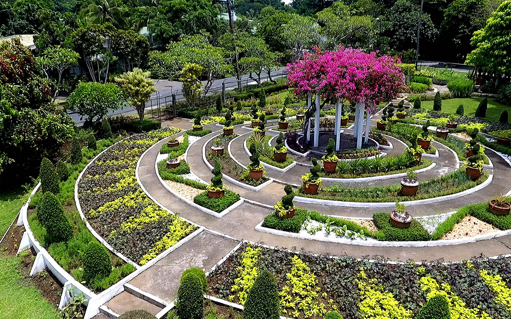
University of the Philippines Los Baños
The UPLB Edible Landscaping team strongly believes that edible landscaping can play a vital role in promoting a greener and healthier lifestyle for Filipinos. With the slogan "No Filipino should be hungry," the team sees edible landscaping as a means to address hunger while encouraging sustainable practices. Edible landscaping involves growing organic vegetables, fruits, herbs, and medicinal plants within landscaping designs, offering the benefits of fresh and chemical-free produce. By integrating edible plants into traditional landscaping, Filipinos can enhance their access to nutritious food and contribute to environmental sustainability.
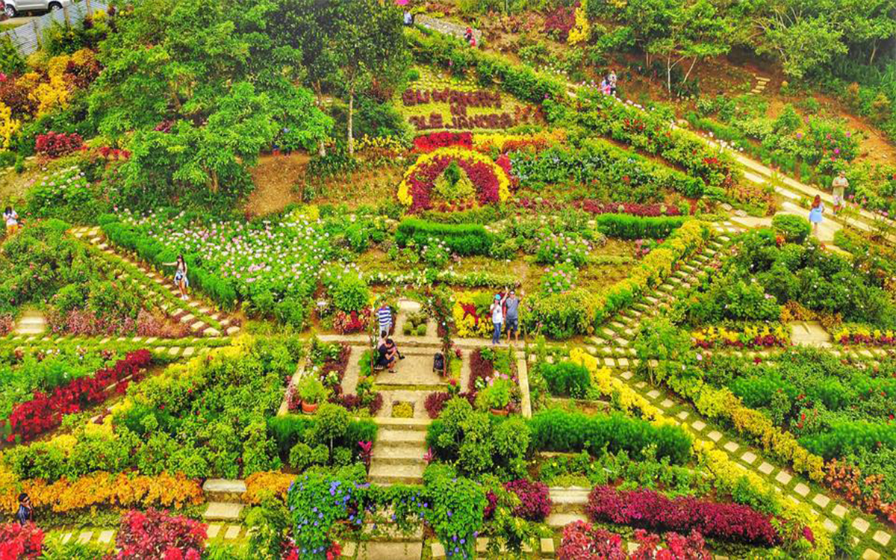
Buwakan ni Alejandra in Cebu Philippines
Buwakan ni Alejandra is a 700-square-meter garden conveniently situated on the Cebu Transcentral Highway, about an hour from the heart of Cebu City. It is home to a variety of flower plants and features approximately 200 kinds of flora and fauna. The word "buwak" translates as "flowers" in Cebuano, the predominant language spoken and used in the Visayas. Thus, "buwakan" comes to mean "flower garden."
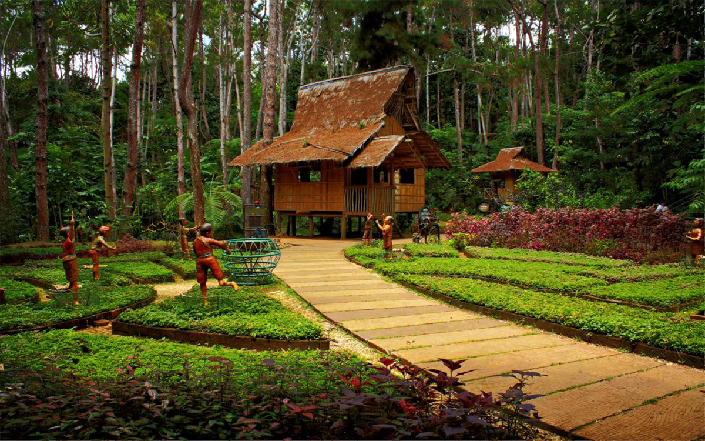
Eden Nature Park and Resort, Davao City
Eden Nature Park and Resort, located in Davao City, Philippines, earned its name from the renowned biblical garden due to its lush greenery and tranquil gardens that offer a peaceful retreat within the bustling city. This idyllic destination serves as an excellent getaway, providing a serene and tropical forest ambiance that can effectively alleviate the stress and noise associated with urban living. With its peaceful atmosphere and natural surroundings, Eden Nature Park and Resort offers visitors a blissful escape where they can unwind and rejuvenate amidst the beauty of nature.
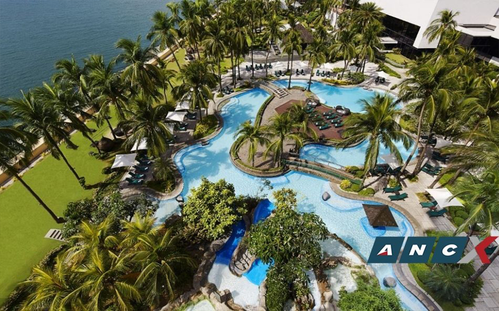
Philippine Plaza Hotel Grounds
It was one of the hotels built at the height of the Marcos era to showcase the Philippines to the world in the midst of the events going on at the time. These hotels aimed to provide a glimpse into the beauty and hospitality of the Philippines. One notable aspect of these hotels was their innovative swimming pool and amenity designs, which set a new standard for hospitality projects in the country. The architectural and landscape enhancements of these hotels aimed to create a visually appealing and inviting atmosphere for guests, elevating the overall experience of hospitality in the Philippines during that era.
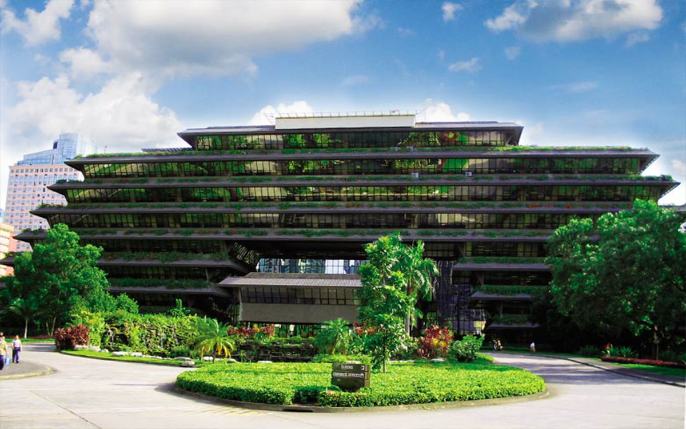
San Miguel Corporation HQ, Ortigas
The San Miguel Corporation Building is renowned for its eco-friendly design and incorporation of ample greenery. The building features terraces adorned with abundant greenery, contributing to a visually pleasing and sustainable environment. In addition, the building boasts slanted windows that serve a dual purpose: deflecting unwanted heat and light, thereby reducing the need for excessive energy consumption and maintaining a comfortable indoor climate.
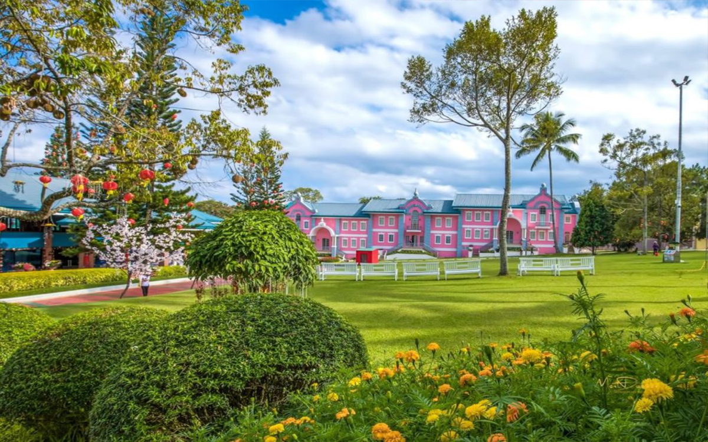
Tamayong Prayer Mountain Calinan, Davao City
The Tamayong Prayer Mountain, also referred to as The Garden of Eden Restored, is a remarkable sanctuary known for its serene and tranquil atmosphere. This mountain retreat offers a haven of peace and relaxation, providing visitors with a sense of paradise that goes beyond its physical appearance. While it may not resemble the Garden of Eden in terms of its visual aesthetics, it exudes sanctity and tranquility, creating a spiritual haven where individuals can find solace and inner peace.
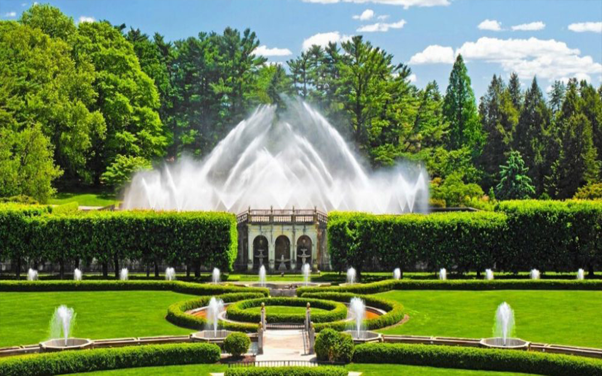
Longwood Gardens
Longwood includes twenty indoor gardens covering 4.5 acres, 325 acres of outdoor gardens, and 752 acres devoted to deciduous hardwood forests, spring-fed lakes, and wildflower meadows. It was listed in the National Register of Historic Places in 1972.
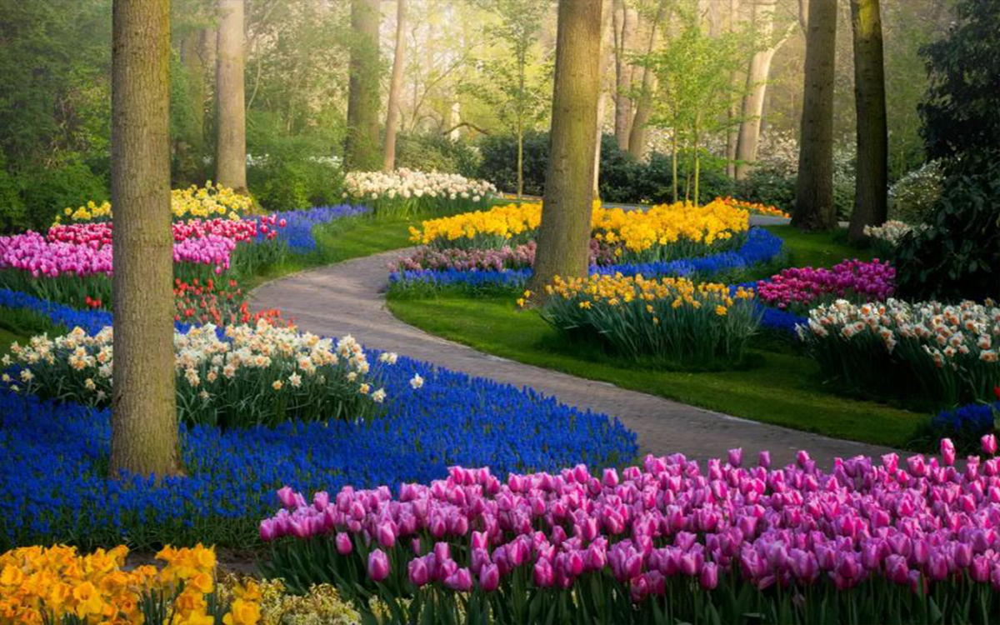
Keukenhof, Netherlands
The Keukenhof Gardens are the world’s largest flower gardens. Also called the “Garden of Europe,” they cover an area of 32 hectares (79 acres). Each year during the Tulip Festival in the spring the garden witnesses the blooming of over 7 million flowers, including over 800 species of tulips. Read on to find out all you need to know about the Keukenhof Tulip Gardens. It features an open roof made of timber triangles that create a spacious and light atmosphere and a fence with a tulip motif.
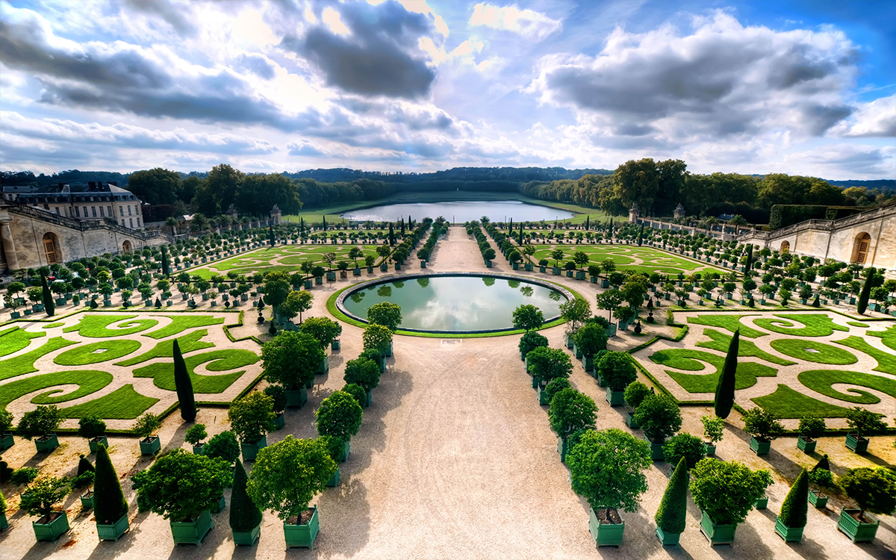
Chateau de Versailles Gardens, France
The Chateau de Versailles Gardens in France are renowned for their stunning landscapes and captivating features. The walkways and paths of the parks are decorated with statues, vases, and manicured yews, and they are bordered by hedges and shrubberies. Around the Green Carpet are numerous groves, perhaps the most remarkable being the Ballroom Grove, a landscaped amphitheatre that features an artificial waterfall.
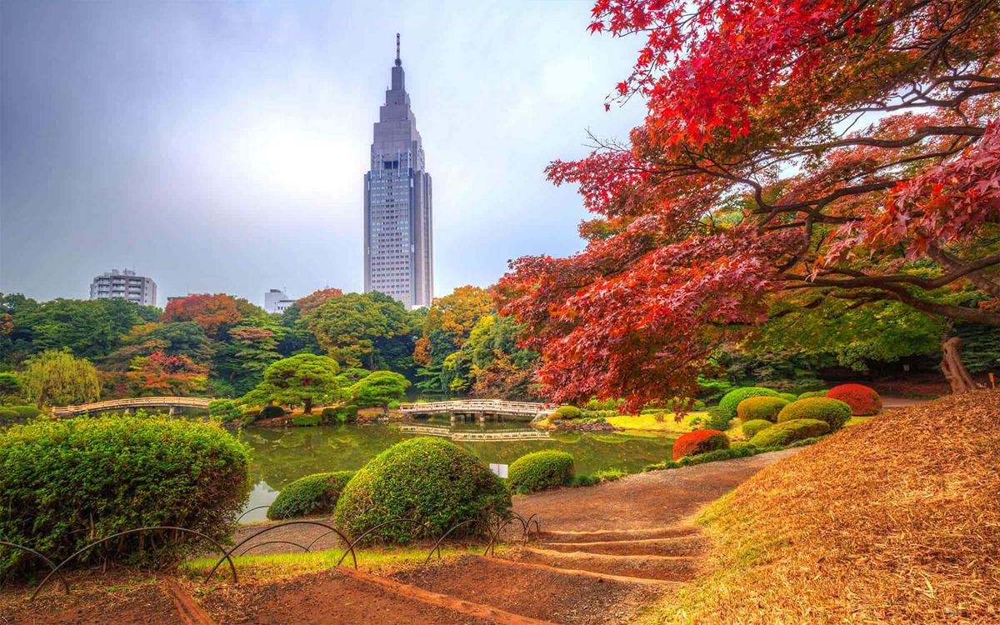
Shinjuku Gyoen National Garden
The garden, which is 58.3 hectares in area with a circumference of 3.5 km, blends three distinct styles: a French Formal and English Landscape in the north and to the south a Japanese traditional. A traditional Japanese tea house can be found within the gardens.
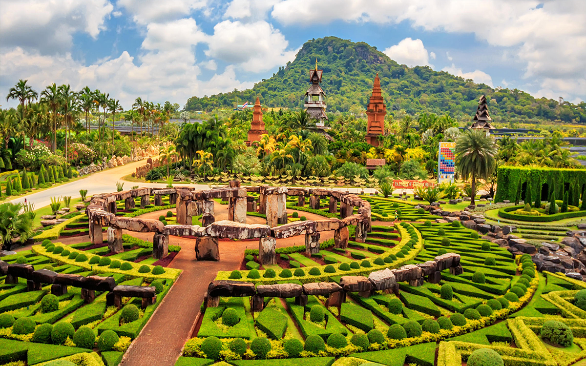
Nong Nooch Tropical Garden, Thailand
The Nong Nooch Tropical Garden This tropical garden is spread over 600 acres of land and showcases the beauty of a 17th century French Garden along with a European Renaissance Garden. This huge garden, which is the world's largest botanical garden, has 30 themed gardens along with mini zoos, bird parks etc.
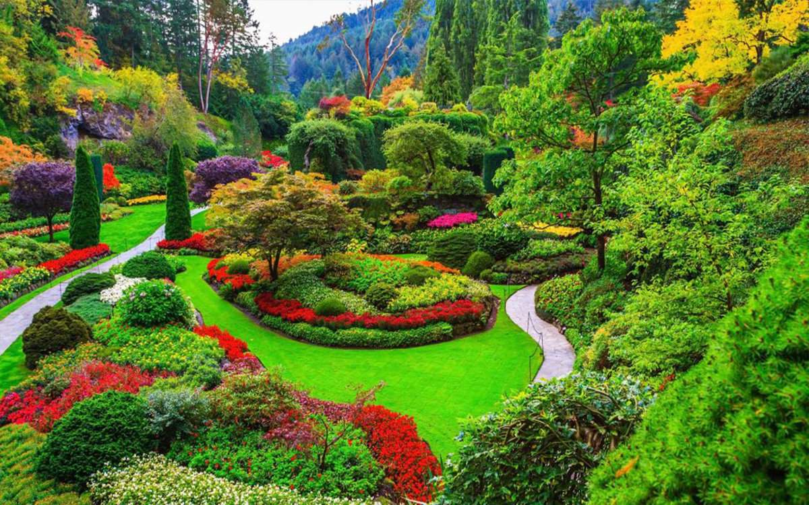
The Butchart Gardens, Canada
The gardens provide dramatic floral displays in a variety of garden settings and styles set against a backdrop of mature trees and shrubs and linked together by a network of paths and transition areas. Throughout the garden are viewpoints offering glimpses of Tod Inlet and the hills beyond.
{kind=link}
{kind=link}
{kind=link}
{kind=link}
{kind=link}
{kind=link}
{kind=link}
{kind=link}
{kind=link}
{kind=link}
{kind=link}
{kind=link}